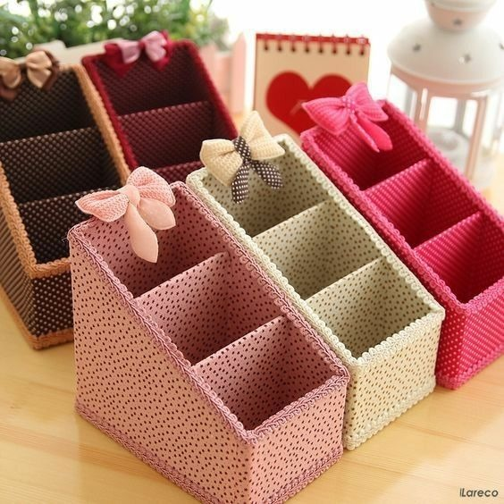
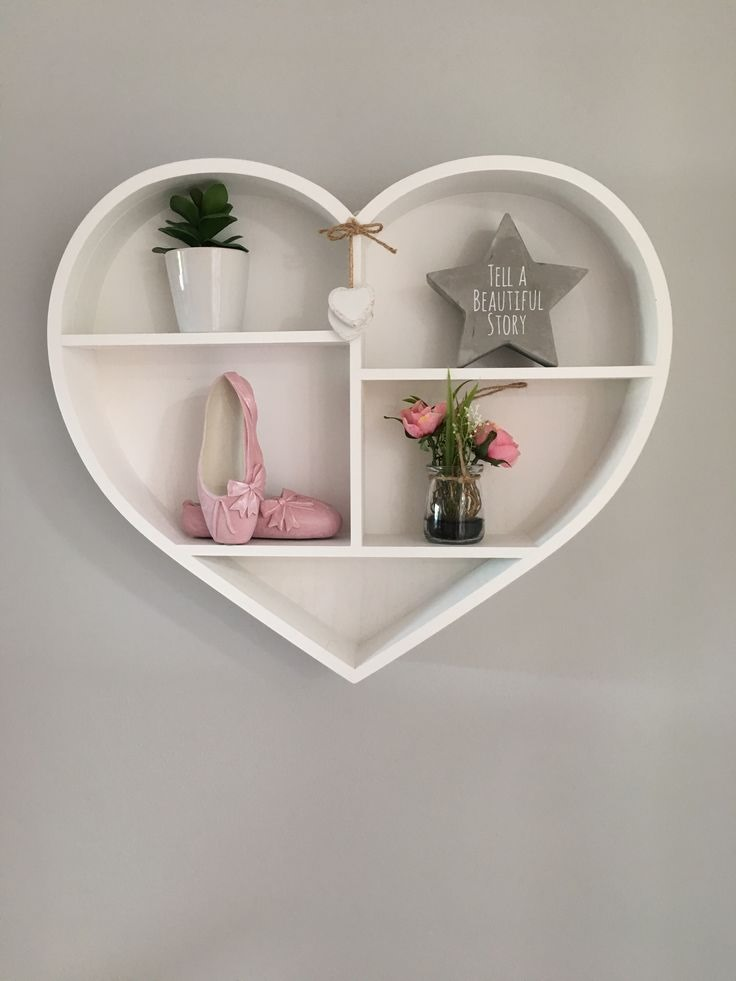
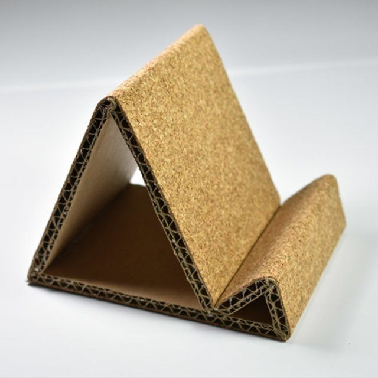

Malzemeler:
• Küçük karton kutu
• Renkli kağıt veya kumaş
• Yapıştırıcı
• Makas
• Bölmeler için karton şeritler
Adımlar:
1- Küçük bir karton kutu seçin. Kutuyu dikey ya da yatay kullanabileceğiniz boyutlarda kesin.
2- İçerisine karton şeritleri yapıştırarak kalem, kağıt ve diğer masaüstü malzemelerini düzenleyecek bölmeler oluşturun.
3- Kutunun dışını renkli kağıt veya kumaşla kaplayarak daha şık hale getirin.
4- İsterseniz kutunun üst kısmına etiketler veya küçük aksesuarlar ekleyerek kişiselleştirebilirsiniz.

Malzemeler:
• Büyük karton kutu
• Yapıştırıcı
• Makas
• Renkli kağıt veya kumaş
• Kancalar veya askı aparatları (isteğe bağlı)
Adımlar:
1- Karton kutuyu kesip rafın boyutlarına göre düzenleyin. Kutuyu uzunlamasına keserek iki raflı bir sistem oluşturabilirsiniz.
2- Kutuyu dışarıdan renkli kağıtla kaplayın veya kumaşla süsleyin. Rafın içinde kullanılacak olan küçük dekoratif eşyalar için kutunun iç kısmını da kaplayabilirsiniz.
3- Rafları duvara monte etmek için kutunun alt kısmına askı aparatları yerleştirebilirsiniz.
4- Raflar hazır olduktan sonra kitap, çerçeveli fotoğraf veya diğer küçük dekoratif objeleri yerleştirebilirsiniz.

Malzemeler:
• Küçük karton kutu
• Yapıştırıcı
• Makas
• Renkli kağıt
Adımlar:
1- Küçük bir karton kutuyu alıp telefonunuzu koyabileceğiniz boyutlarda kesin.
2- Kutuya telefonunuzu yerleştirecek bir alan açın. Yatay ve dikey olarak telefonunuzu tutacak şekilde bir destek oluşturun.
3- Kutuyu renkli kağıtla kaplayarak dekoratif hale getirin.